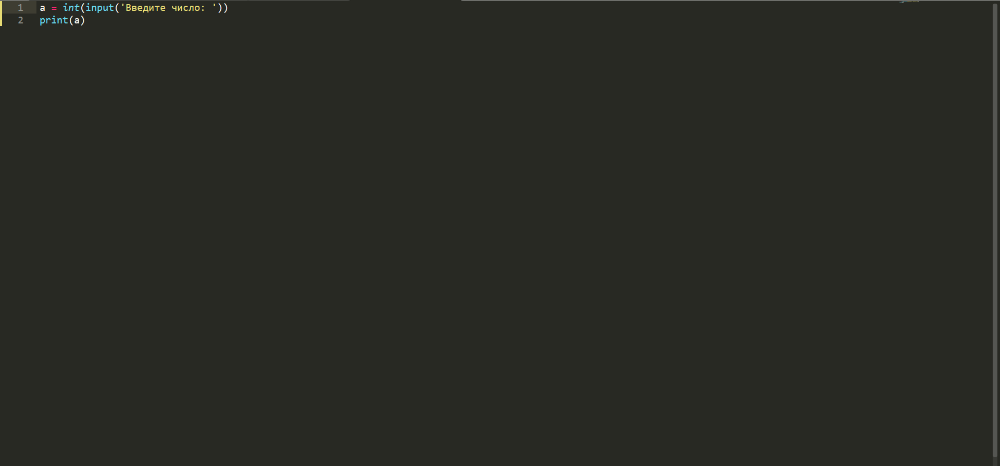

Темой этого урока для нас станет ввод и вывод данных в Python. Осуществляется он там довольно таки просто. Для вывода любых значений и любых данных в Python существует функция print().
Использую данную функцию мы можем вывести фактически что угодно(любое значение). Так, например, мы можем задать любую переменную и с помощью print вывести её значение. Пример привёдён ниже.
В данном случае мы задаём переменной а значение 5 и выводим его. А так как у нас а = 5, то и выведется у нас число 5.
Следующая функция служит уже для ввода пользователем чего-либо. И имя этих функций input() и int(input()). Тут у вас наверяка созрел следующий вопрос: а в чём же между ними разница. Разница лишь в том, что используя input() вы можете вводить только строки или наборы символов. В случае же с int(input())- только числовые значения.
Напоследок решим небольшую лёгкую задачу. Звучит она так. Пользователь вводит число, далее нужно вывести это число. Ну что, догадались? Нет? Тогда решение написано на картинке ниже.
В этой теме мы свами подробно разобрали ввод и вывод данных в Python.